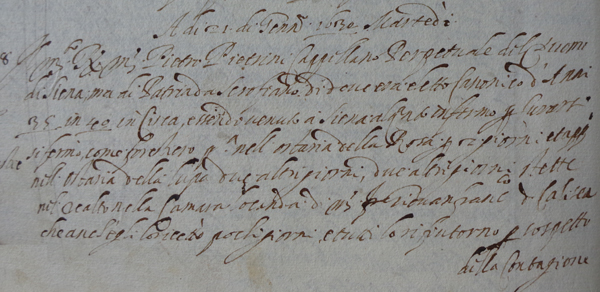

"Il Molto Reverendo Pietro Pietrini Cappellano Perpetuale del Duomo di Siena, ma di Patria da Scrofiano di dove era eletto Canonico d'Anni 35 in 40 in Circa, essendo venuto à Siena alquanto infermo per curarsi, si fermò come forestiero prima nell'ostaria della Rosa per 2 giorni et appresso nell'Ostaria della Lupa due altri giorni, due altri giorni stette nel realto nella Camara Locanda di Messer Giovan Francesco detto Calisca che anch'egli lo ricettò pochi giorni, e tutti lo rifiutorno per sospetto della contagione, che per tutto il mondo vi s'haveva dubbio per benchè per la Misericordia di Dio, et per la sua Pietà per ancora non s'era ne provata necessità in Siena; fu non di meno ricevuto in Casa del buon San Maritano dico dal Molto Reverendo Ascanio Casini, che haveva la Casa in Castello Vecchio sotto la Cura di S.Pietro ale Scale..."

Non lasciamoci ingannare dalla data che è stata poc'anzi riportata, perchè a quei tempi fino al 25 di marzo, gli anni venivano computati in maniera differente dalla nostra, così che il giorno in questione [21 gennaio 1630], in realtà fa parte dell'anno 1631.
Tutto questo serve a far chiarezza su quanto verrà esposto in seguito sull'argomento delle epidemie che periodicamente, per secoli, afflissero le nostre popolazioni.
Infatti a Firenze nel giugno 1630, si ebbero i primi sintomi di una pestilenza che in seguito si estese fino ad arrivare alle porte di Siena.
La causa è da ricercare nella crisi agraria dell'anno precedente e dalla conseguente carestia.
Firenze e il suo distretto (e in seguito anche Pistoia e Lucca) vennero colpiti dal terribile morbo, che con lentezza implacabile continuò ad avanzare da nord verso sud in direzione del territorio senese, tanto da giungere fino ad Ancaiano, che provocò molte vittime, lasciando molti poderi spopolati.

 ACCADDE OGGI
ACCADDE OGGI